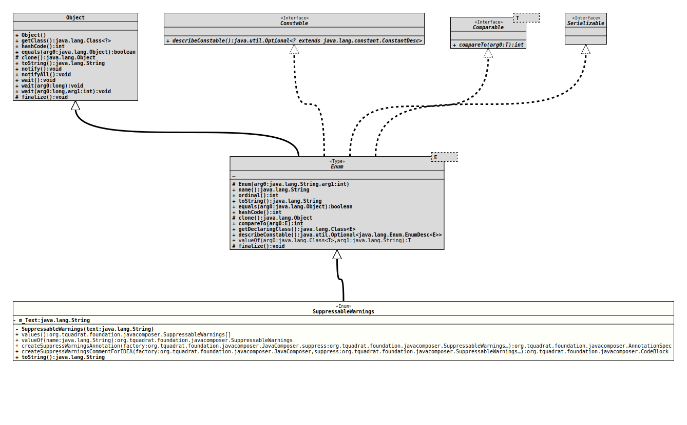

Enum Class SuppressableWarnings
- All Implemented Interfaces:
Serializable,Comparable<SuppressableWarnings>,Constable
Warnings that can be suppressed with the
@SuppressWarnings
annotation.
There are different – partially overlapping – sets of these warnings
and the arguments to the annotation; one is defined by Java directly,
another one is defined by Eclipse, a third one by IntelliJ IDEA (see
https://gist.github.com/vegaasen/157fbc6dce8545b7f12c
for a – not exhausting – list). Other IDEs and/or Java distributions may
add more.
- Author:
- Thomas Thrien (thomas.thrien@tquadrat.org)
- Version:
- $Id: SuppressableWarnings.java 1085 2024-01-05 16:23:28Z tquadrat $
- Since:
- 0.0.5
- See Also:
- UML Diagram
-

UML Diagram for "org.tquadrat.foundation.javacomposer.SuppressableWarnings"
{kind=link}
-
Nested Class Summary
Nested classes/interfaces inherited from class java.lang.Enum
Enum.EnumDesc<E extends Enum<E>> -
Enum Constant Summary
Enum ConstantsEnum ConstantDescriptionAn abstract class is not implemented in the current project scope.A class was qualified as abstract without having any abstract methods.A method accesses a non-public (private) field of another object.All warnings.A type variable bound is more restrictive than necessary; sometimes, this is wrong, in particular when the bound type is anenum.Boxing/unboxing is used implicitly.Some possible cases in aswitchstatement have been omitted purposely.An unnecessary cast is used.An object is cast to a concrete class, instead to one of the interfaces implemented by that class.A class or interface references one of its own subclasses/implementations.The current class has too many fields according to the configured metric value.The current class or interface has too many methods according to the configured metric value.A deprecated element is used.A necessary@Deprecatedannotation is missing.A (private) attribute can be moved to be a local variable.A private attribute of a class is never changed.A component in aforloop was omitted.A switch statement is incomplete.The particular class is an inner class or interface of an interface.The attribute's type is of a concrete class instead of the interface that is implemented by that class.An interface with just one non-default, non-static method syntactically can be used as a functional interface, but it does not make sense for all of these interfaces semantically.A required Javadoc comment is missing or the Javadoc is incomplete or invalid.A "Magic" character is used, instead of a constant or an enum.A "Magic" number is used, instead of a constant.The implementation of a method (likeObject.clone()for example) does not call the implementation of it in the super class, although this is expected.JUnit assert statements, likeassertEquals()do expect their arguments in a specific order, usually is the expected value the first argument, and the result from the test run is the second argument.Usually, a method that does nothing in meant to be overridden in an implementing class.There is a call toOptional.get()without a previous check whether theOptionalis not empty by callingOptional.isPresent()orOptional.isEmpty().The current class is too complex (cyclomatic complexity), according to the configured metric.The current class is too closely coupled to other classes, according to the configured metric.A preview feature was used.A class implements one or more interfaces, but some of its public methods are not exposed via any of those interfaces.The variable's explicit type can be replaced byvar.The default (no-argument) constructor does nothing, and therefore it is not necessary to write it down explicitly in the code.AnAutoCloseablewas not closed.A method is called with always the same argument.TheSerialVersionUIDfor a serialisable class is missing.TheSerialVersionUIDfor a serialisable class is missing.A static method is one class is exclusively called by one single other class.The type of the argument to thetoArray()method is unexpected.A thrown exception is caught within the same method.A more general type could be usedThe method or statement is performing an unchecked conversion for a generic data type.The type for the argument looks not correct.An element is not used.No caller of the method ever regards its return value.A concrete class is used for an attribute, a return value or an argument. -
Field Summary
Fields -
Constructor Summary
ConstructorsModifierConstructorDescriptionprivateSuppressableWarnings(String text) Creates a newSuppressableWarningsinstance. -
Method Summary
Modifier and TypeMethodDescriptionstatic final AnnotationSpeccreateSuppressWarningsAnnotation(JavaComposer factory, SuppressableWarnings... suppress) Creates anAnnotationSpecinstance for the@SuppressWarningsannotation.static final CodeBlockcreateSuppressWarningsCommentForIDEA(JavaComposer factory, SuppressableWarnings... suppress) Creates a comment (for IntelliJ IDEA) that suppresses the given warnings.final StringtoString()static SuppressableWarningsReturns the enum constant of this class with the specified name.static SuppressableWarnings[]values()Returns an array containing the constants of this enum class, in the order they are declared.
-
Enum Constant Details
-
ALL
All warnings. -
ABSTRACT_CLASS_NEVER_IMPLEMENTED
An abstract class is not implemented in the current project scope. Common for libraries. -
ABSTRACT_CLASS_WITHOUT_ABSTRACT_METHODS
A class was qualified as abstract without having any abstract methods. Happens sometimes for adapter classes. -
ACCESSING_NON_PUBLIC_FIELD_OF_ANOTHER_OBJECT
A method accesses a non-public (private) field of another object. -
BOUNDED_WILDCARD
A type variable bound is more restrictive than necessary; sometimes, this is wrong, in particular when the bound type is anenum. -
BOXING
Boxing/unboxing is used implicitly. -
CASES_OMITTED
Some possible cases in a
switchstatement have been omitted purposely.This suppression is specific to Eclipse and works only as a comment, like this:
… //$CASES-OMITTED$ switch( … ) { case … default … }It cannot be used with
createSuppressWarningsAnnotation(JavaComposer,SuppressableWarnings...)nor withcreateSuppressWarningsCommentForIDEA(JavaComposer,SuppressableWarnings...). -
CAST
An unnecessary cast is used. -
CAST_TO_CONCRETE_CLASS
An object is cast to a concrete class, instead to one of the interfaces implemented by that class. -
CLASS_REFERENCES_SUBCLASS
A class or interface references one of its own subclasses/implementations. This happens for example in factory methods in the interface or base class.
Although potentially dangerous, it can be done safely if interface or baseclass are sealed.
-
CLASS_WITH_TOO_MANY_FIELDS
The current class has too many fields according to the configured metric value. -
CLASS_WITH_TOO_MANY_METHODS
The current class or interface has too many methods according to the configured metric value. -
COLLECTION_DECLARED_AS_CONCRETE_CLASS
-
DEPRECATION_ANNOTATION
A necessary@Deprecatedannotation is missing.- Note:
-
- To suppress this warning makes only sense on the class level
when there are lots of deprecated methods in it, missing the
@Deprecatedannotation.
- To suppress this warning makes only sense on the class level
when there are lots of deprecated methods in it, missing the
-
DEPRECATION
A deprecated element is used. -
FIELD_CAN_BE_LOCAL
A (private) attribute can be moved to be a local variable. -
FIELD_MAY_BE_FINAL
A private attribute of a class is never changed. -
FOR_LOOP_WITH_MISSING_COMPONENT
A component in a
forloop was omitted.The usual
forloop looks like this:… for( var i = 0; i < max; ++i ) { … } …But when using an instance of
Iterator, a common pattern looks like below:… Collection<T> c = … for( var i = c.iterator(); i.hasNext(); ) { var t = i.next(); … } …The update for
iis missing the header for the loop, and the compiler warn about that (or the IDE, whoever …). -
INCOMPLETE_SWITCH
A switch statement is incomplete. -
INNER_CLASS_OF_INTERFACE
The particular class is an inner class or interface of an interface. -
INSTANCE_VARIABLE_OF_CONCRETE_CLASS
The attribute's type is of a concrete class instead of the interface that is implemented by that class. -
INTERFACE_MAY_BE_ANNOTATED_FUNCTIONAL
An interface with just one non-default, non-static method syntactically can be used as a functional interface, but it does not make sense for all of these interfaces semantically. -
JAVADOC
A required Javadoc comment is missing or the Javadoc is incomplete or invalid. -
MAGIC_CHARACTER
A "Magic" character is used, instead of a constant or an enum. -
MAGIC_NUMBER
A "Magic" number is used, instead of a constant. -
METHOD_DOESNT_CALL_SUPER_METHOD
The implementation of a method (likeObject.clone()for example) does not call the implementation of it in the super class, although this is expected. -
MISORDERED_ASSERT_EQUALS_ARGUMENTS
JUnit assert statements, likeassertEquals()do expect their arguments in a specific order, usually is the expected value the first argument, and the result from the test run is the second argument. -
NOOP_METHOD_IN_ABSTRACT_CLASS
Usually, a method that does nothing in meant to be overridden in an implementing class. If such a method is in an abstract class, it should be abstract, too. But for adapter classes, it is intended that the method is no-op and not abstract. -
OPTIONAL_GET_WITHOUT_IS_PRESENT
There is a call to
Optional.get()without a previous check whether theOptionalis not empty by callingOptional.isPresent()orOptional.isEmpty().This can be valid if it is well known otherwise that the
Optionalis not empty. -
OVERLY_COMPLEX_CLASS
The current class is too complex (cyclomatic complexity), according to the configured metric. -
OVERLY_COUPLED_CLASS
The current class is too closely coupled to other classes, according to the configured metric. -
PREVIEW
A preview feature was used. -
PUBLIC_METHOD_NOT_EXPOSED_IN_INTERFACE
A class implements one or more interfaces, but some of its public methods are not exposed via any of those interfaces. This happens is a common pattern with modularisation (Jigsaw), where internal classes are public to the whole module, but invisible to the users of the module. -
REDUNDANT_NO_ARG_CONSTRUCTOR
The default (no-argument) constructor does nothing, and therefore it is not necessary to write it down explicitly in the code. -
REDUNDANT_EXPLICIT_VARIABLE_TYPE
The variable's explicit type can be replaced byvar. -
RESOURCE
AnAutoCloseablewas not closed. -
SAME_PARAMETER_VALUE
A method is called with always the same argument. Usually this means that the argument is obsolete. -
SERIAL
TheSerialVersionUIDfor a serialisable class is missing. -
SIMPLIFY_STREAM_API_CALL_CHAIN
TheSerialVersionUIDfor a serialisable class is missing. -
STATIC_METHOD_ONLY_USED_IN_ONE_CLASS
A static method is one class is exclusively called by one single other class. Usually this means that this method should be moved into the calling class. -
SUSPICIOUS_TO_ARRAY_CALL
The type of the argument to thetoArray()method is unexpected. -
THROW_CAUGHT_LOCALLY
A thrown exception is caught within the same method. -
TYPE_MAY_BE_WEAKENED
A more general type could be used (e.g.CharSequenceinstead ofStringorCollectioninstead ofList). -
UNLIKELY_ARG_TYPE
The type for the argument looks not correct. -
UNCHECKED
The method or statement is performing an unchecked conversion for a generic data type. -
UNUSED
An element is not used. This could be a parameter, a field, a private method … -
UNUSED_RETURN_VALUE
No caller of the method ever regards its return value. -
USE_OF_CONCRETE_CLASS
A concrete class is used for an attribute, a return value or an argument. For a better decoupling, the use of interfaces only is preferred.
-
-
Field Details
-
m_Text
The text for the suppressable warning as added to the annotation.
-
-
Constructor Details
-
SuppressableWarnings
Creates a newSuppressableWarningsinstance.- Parameters:
text- The text for the suppressable warning as added to the annotation.
-
-
Method Details
-
values
Returns an array containing the constants of this enum class, in the order they are declared.- Returns:
- an array containing the constants of this enum class, in the order they are declared
-
valueOf
Returns the enum constant of this class with the specified name. The string must match exactly an identifier used to declare an enum constant in this class. (Extraneous whitespace characters are not permitted.)- Parameters:
name- the name of the enum constant to be returned.- Returns:
- the enum constant with the specified name
- Throws:
IllegalArgumentException- if this enum class has no constant with the specified nameNullPointerException- if the argument is null
-
createSuppressWarningsAnnotation
public static final AnnotationSpec createSuppressWarningsAnnotation(JavaComposer factory, SuppressableWarnings... suppress) Creates anAnnotationSpecinstance for the@SuppressWarningsannotation.- Parameters:
factory- The factory for the JavaComposer artefacts.suppress- The tokens for the warnings to suppress.- Returns:
- The annotation specification.
-
createSuppressWarningsCommentForIDEA
public static final CodeBlock createSuppressWarningsCommentForIDEA(JavaComposer factory, SuppressableWarnings... suppress) Creates a comment (for IntelliJ IDEA) that suppresses the given warnings.- Parameters:
factory- The factory for the JavaComposer artefacts.suppress- The tokens for the warnings to suppress.- Returns:
- The
CodeBlockwith the comment.
-
toString
- Overrides:
toStringin classEnum<SuppressableWarnings>
-